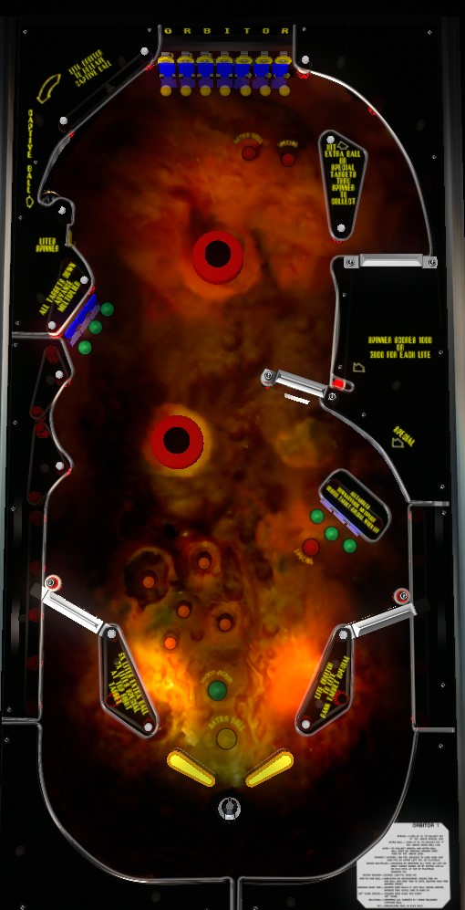

I sure hope you didn't confuse this with Orbit (Gottlieb, 1971) or Super Orbit (Gottlieb, 1983).
If you are able to become the only person in the world that can actually predict how the pinball moves around the table on Orbitor 1, aim to hit the drop targets around the game and the standup targets behind the upper drops increase base bonus and bonus multiplier. The somewhat-hidden yellow standup target in the upper left can be hit up to 3 times to advance the spinner value to 9,000 per spin for the rest of the game. Other than that, just watch the ball flail around in wild directions and when the ball is below the flippers, hold just one flipper up in case the ball wants to come up the playfield and back into play.
Alternate quick synopsis: magnets, how do they work?
Orbitor 1 pinball is unconventional in every sense of the word. The playfield is "three-dimensional" with many hills and valleys and craters, meant to imitate the surface of the moon or another planet. Large magnets under the table pull the ball around in directions that would be physically impossible on basically every other pinball table ever made. The two red and black discs in the middle of the table are the game's bumpers- they rapidly spin at all times, flinging the pinball away with a lot of force and massive sidespin. The ball routinely goes below the flippers on Orbitor 1, and can come back up the playfield above the flippers and back into play by magnetic force or the grace of Arceus himself. Your ball is never over on Orbitor 1 until it falls into the small hole just below the flipper gap. Nudging doesn't do much of anything on this game, but by holding one flipper up, you can modestly increase your chances of allowing a ball to return to the area above the flippers where you actually want it to be. Also, even though it looks like there is no solid object above/behind the hinge of the flipper, the presence of magnets near the bottom of the table usually does allow the possibility of holding up a flipper to cradle a ball.
Orbitor 1 also has a minimum game time mechanic that cannot be disabled. An operator setting guarantees all players a minimum of 90, 120, 150, or 180 seconds of game time. If you drain your final ball of the game and have not yet met this quota, you will continuously be fed extra balls until you have exceeded the minimum game time. This minimum is still enforced even if the playfield extra ball feature is disabled outright.
In the lower drop target banks: hit an unlit drop target to light it. Unlit drop targets score 1,000 points, and lit drop targets score 2,000. Complete either bank to score 10,000 points, reset that bank, and increase bonus multiplier by 1x up to the maximum of 15x.
For the upper drop target bank, each target down always scores 500 points. The standup targets behind the upper drops score 5,000 points when not lit, and 10,000 when lit; again, hit an unlit target to light it. Bonus multiplier is advanced by completing the O-B-T-R or R-I-O sets of drop targets. The upper drop targets reset when all 7 are knocked down, no matter how many of the standup targets behind them are lit.
Base bonus is equal to 1,000 points for each lower drop target or upper standup target that is lit at the end of the ball. Lower drop targets are lit on the playfield, but upper standup targets are lit at the letters above the target bank. Completing a lower drop target bank spots one lit standup target. If all 7 top standup targets and all 6 lower drop targets are lit at any one time, they all reset, and the 13,000 points of base bonus they represented is stored in memory (though as far as I know, it's impossible to see how many of those sets of 13,000 base bonus you have banked). It is possible to bank at least 10 completions of lit targets, for a maximum bonus of at least 15x 10x 13,000 = 1,950,000 points. Getting more than 1 or 2 completed sets of 13,000 base bonus is exceedingly difficult, though. End of ball bonus is not collected and does not reset if you are given the ball back after draining because your game time has not met the minimum allowable game time yet. It appears that all base bonus and multipliers can carry over from ball to ball by default; bonus multiplier carryover can definitely be disabled as an operator setting, though.
Lighting all 7 top standup targets one time also lights the center drop target of the lower right drops bank for a Special.
The spinner scores 1,000 points per spin. The unmarked yellow standup target in the upper left of the game increases the spinner value with each hit to 3,000, then 6,000, then 9,000 points per spin. The increased spinner value is held for the entire game.
If the bonus multiplier is increased to 5x, an extra ball will be lit. This extra ball can only be redeemed by shooting through the spinner and knocking down the T drop target in the top bank. Similarly, advancing the bonus multiplier to 7x lights a special, which can only be scored by shooting through the spinner and knocking down the second R (far right) top drop target. If bonus multipliers are set to carry over from ball to ball, these can only be collected once per game.
The upper left saucer is always available to lock a ball if it is empty. Locking a ball scores 1,000 points. If a ball is locked, complete the top drop targets to release it. There are no multiball specific scoring features, so there's almost no reason to do this, and when multiball does happen, it's usually by accident. Lock stealing is possible and locked balls are not kicked out at the end of the game either.
Good luck, bucko.
Extra ball can only be turned on or off, and cannot be set to a point value. Specials can score a free game, an extra ball, or 100,000 points.
Thanks for making it to the end of this guide and showing interest in my information about this exceedingly strange pinball table. This guide was written for April Fool's Day 2025, hence the tone used at times. With that said, though, all information about the game itself listed on this page is correct to the best of my knowledge, just as with all other game rulesheets and tutorials on The Pinball Primer.